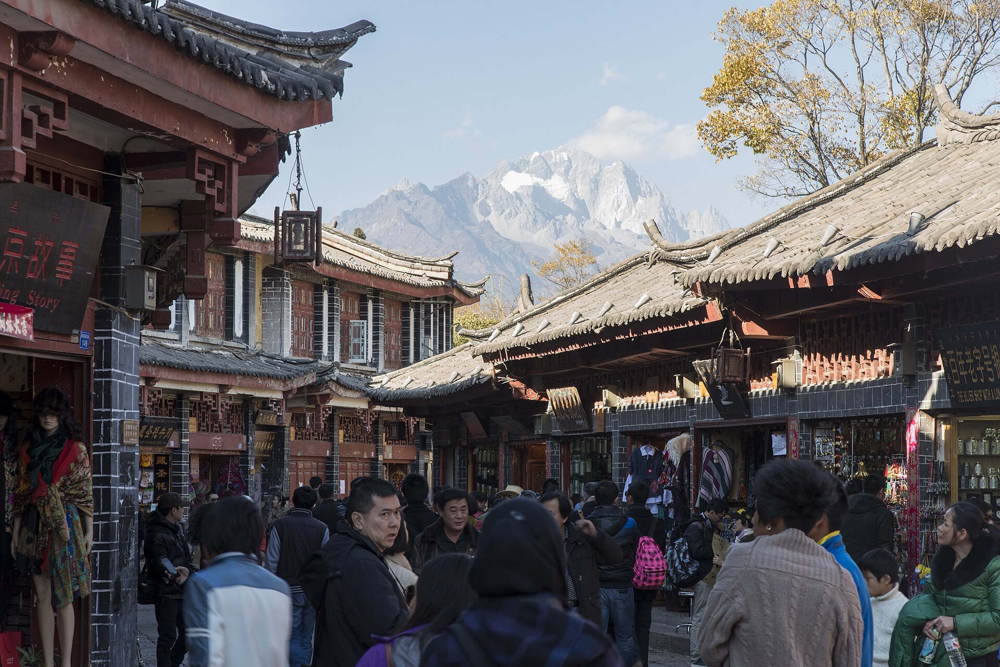

เที่ยวจีน 2026
Yunnan Travel 2026
TH
ไทย
▼
TH
ไทย
ZH
中文
EN
English

24 – 31 ตุลาคม 2569 | 8 วัน 7 คืน
เที่ยวจีน 2026
คุนหมิง — ลี่เจียง — เสือกระโจน — แชงกรี-ลา
ดูกำหนดการเดินทาง
01
กรุงเทพฯ
24 ต.ค.
02
คุนหมิง
25 ต.ค.
03
ลี่เจียง
26–27 ต.ค.
04
เสือกระโจน
27–28 ต.ค.
05
แชงกรี-ลา
28–30 ต.ค.
06
กรุงเทพฯ
31 ต.ค.
กำหนดการเดินทาง
แผนการเดินทาง 8 วัน 7 คืน
24 ต.ค.
เดินทาง
25 ต.ค.
คุนหมิง
26 ต.ค.
ลี่เจียง
27 ต.ค.
เสือกระโจน I
28 ต.ค.
เสือกระโจน II
29 ต.ค.
แชงกีลา I
30 ต.ค.
แชงกีลา II
31 ต.ค.
กลับบ้าน
วันที่ 1
กทม. สู่ คุนหมิง
24 ต.ค. 69
คุนหมิง 15–22°C (ความสูง 1,890 ม.)
DAY 01
คัดลอก
17:50 – 20:50
สนามบินสุวรรณภูมิ (BKK)
เช็กอินเคาน์เตอร์ China Eastern
E-Ticket
20:50 – 00:30
เที่ยวบิน MU-9614
บินสู่สนามบินคุนหมิง (KMG)
Amap
E-Ticket
วันที่ 2
คุนหมิง สู่ ลี่เจียง
25 ต.ค. 69
คุนหมิง 15–22°C (ความสูง 1,890 ม.)
DAY 02
คัดลอก
00:30 – 02:00
สนามบินคุนหมิง
ผ่าน ตม. รับกระเป๋า ต่อรถไปโรงแรม
Amap
02:00 – 10:00
โรงแรม Tenghang
เช็กอินนอนพักผ่อน
Amap
เอกสารเช็กอิน
10:00 – 12:30
เช็กเอาต์ฝากกระเป๋า นั่ง Metro สาย 6 สู่ร้านเจี้ยนซินหยวน (กินก๋วยเตี๋ยวข้ามสะพาน)
Amap
12:30 – 15:00
ย่านใจกลางเมือง
เดินเที่ยวซุ้มประตูกิมหม่าปี้จีฟาง, ถนนคนเดินหนานผิง, เมืองเก่าคุนหมิงเหล่าเจีย
Amap
15:00 – 18:30
ตลาดต้ากวนจ้วนซิน
ชิมสตรีทฟู้ดและกินมื้อเย็น
Amap
18:30 – 20:30
นั่ง Metro สาย 6 กลับไปรับกระเป๋าที่ Tenghang แล้วตรงไปสนามบิน
Amap
20:30 – 22:45
สนามบินคุนหมิง
เช็กอินไฟลท์ภายในประเทศ
E-Ticket
Amap
22:45 – 23:45
เที่ยวบิน MU-5923
คุนหมิง สู่ สนามบินลี่เจียง (LJG)
E-Ticket
Amap
23:45 – 00:30
เช็กอินนอน Longluohe Homestay (ใกล้สนามบิน)
Amap
เอกสารเช็กอิน
วันที่ 3
เมืองเก่าลี่เจียง
26 ต.ค. 69
ลี่เจียง 8–18°C (ความสูง 2,400 ม.)
DAY 03
คัดลอก
08:30 – 11:30
นั่ง DiDi เข้าเมืองเก่าลี่เจียง ฝากกระเป๋าที่ Qiyue Linyin Bieyuan
Amap
เอกสารเช็กอิน
11:30 – 13:30
หม้อไฟซี่โครงหมูอาผอฉิง
กินมื้อเที่ยง
Amap
13:30 – 18:30
เดินเที่ยวรอบเมืองเก่า
สระมังกรดำ, กังหันน้ำใหญ่, ซื่อฟางเจีย, สะพานต้าสือเฉียว และคฤหาสน์ตระกูลมู่
Amap
18:30 – 20:30
ตลาดโต้รุ่งจงอี้
กินมื้อค่ำ
Amap
20:30 เป็นต้นไป
กลับที่พัก จัดเป้ Daypack เตรียมส่งกระเป๋าใหญ่ล่วงหน้าไป Tina's
Amap
วันที่ 4
เสือกระโจน วันแรก (High Trail)
27 ต.ค. 69
เสือกระโจน 6–16°C (ความสูง 2,670 ม.)
DAY 04
คัดลอก
07:00 – 07:35
เช็กเอาต์ เดินไปจุดขึ้นรถบัสที่ ลานไป๋หลง
รอบริเวณทางเข้า 祥和国土资源所 นั่งฝั่งขวาของรถ
Amap
07:35 – 09:45
นั่งรถบัสตรงสู่เสือกระโจน (ฝากกระเป๋าใหญ่ใต้ท้องรถส่งไป Tina's)
ตั๋วรถบัส 1
ตั๋วรถบัส 2
09:45 – 10:45
ถึงจุดจำหน่ายตั๋วเฉียวโถว ต่อรถตู้ท้องถิ่นย่นระยะไป Naxi Family Guesthouse
Amap
11:00 – 11:45
Naxi Family Guesthouse
กินมื้อเที่ยง เติมแรง
Amap
11:45 – 14:00
เดินเทรลขึ้น 28 โค้งหักศอก สู่จุดชมวิวสูงสุด (2,670 ม.)
Amap
14:00 – 17:00
เดินเลียบผา ผ่าน Tea Horse สู่ Summit Inn
Amap
17:00 เป็นต้นไป
เช็กอิน Summit Inn
ชมวิวพระอาทิตย์ตก กินมื้อค่ำ พักผ่อน
เอกสารเช็กอิน
Amap
วันที่ 5
เสือกระโจน วันสอง สู่ แชงกรี-ลา
28 ต.ค. 69
แชงกรี-ลา 2–14°C (ความสูง 3,200 ม.)
ข้อควรระวัง: ภาวะแพ้ที่สูง (AMS)
DAY 05
คัดลอก
07:30 – 09:00
มื้อเช้าและเช็กเอาต์ออกจาก Summit Inn
Amap
09:00 – 12:30
เทรลต่อผ่าน Halfway และน้ำตกกวนอิม มุ่งหน้าสู่ Tina's Guesthouse
Amap
Amap
12:30 – 15:30
ถึง Tina's
รับกระเป๋าใหญ่คืน กินมื้อเที่ยง รอขึ้นรถ
Amap
15:30 – 17:30
รถบัสตรง Tina's สู่ เมืองโบราณตู๋เค่อจง (แชงกรี-ลา)
ตั๋วรถบัส 1
ตั๋วรถบัส 2
Amap
17:30 – 18:15
ถึงตู๋เค่อจง เช็กอิน Wangshan Xiaoyuan Inn
Amap
เอกสารเช็กอิน
18:15 – 19:45
มื้อค่ำอาหารทิเบตร้าน 静静的嘛呢石
Amap
19:45 – 21:00
วัดกุยซาน
หมุนกงล้อมนต์ทองคำ ชมวิวเมืองโบราณเปิดไฟ
Amap
วันที่ 6
แชงกรี-ลา สู่ เฟยไหลซื่อ (เหมยลี่)
29 ต.ค. 69
แชงกรี-ลา 0–12°C / เฟยไหลซื่อ -2 ถึง 8°C (สูง 3,450 ม.)
ข้อควรระวัง: ภาวะแพ้ที่สูง (AMS) & อากาศหนาวจัด
DAY 06
คัดลอก
08:00 – 09:00
ตลาดเช้าเซียงหยาง (มื้อเช้าทิเบต) เช็กเอาต์ฝากกระเป๋าใหญ่ไว้ที่พัก สะพายเฉพาะเป้เล็ก
Amap
09:00 – 12:30
นั่งรถเมล์สาย 3 ไปชม วัดซงจ้านหลิน และทางเดินทะเลสาบลาหมู่หยางชั่ว
Amap
12:30 – 14:15
กลับเมืองเก่า กินมื้อเที่ยง จิบชานมคาเฟ่ 古城角落甜茶馆 แล้วไปรอที่ประตูตะวันออก
Amap
14:30 – 18:30
นั่งรถบัสตรง 4 ชม. สู่ หน้าผาเฟยไหลซื่อ ภูเขาหิมะเหมยลี่
ตั๋วขาไป
Amap
18:30 – 21:30
เช็กอิน Baqin Duji Boutique B&B กินหม้อไฟเนื้อจามรีริมผา พักผ่อน
เอกสารเช็กอิน
Amap
วันที่ 7
แสงทองเหมยลี่ กลับสู่ ลี่เจียง
30 ต.ค. 69
เฟยไหลซื่อ -2 ถึง 8°C / ลี่เจียง 5–18°C
DAY 07
คัดลอก
07:00 – 08:15
ชมปรากฏการณ์ รื่อจ้าวชินซาน (แสงทองสาด 13 ยอดเขาหิมะเหมยลี่)
Amap
08:15 – 09:30
มื้อเช้า เช็กเอาต์ เดินไปขึ้นรถบัส
Amap
09:30 – 13:30
รถบัสตรง เฟยไหลซื่อ กลับมายัง ตู๋เค่อจง
ตั๋วขากลับ
Amap
13:30 – 16:00
รับกระเป๋าใหญ่คืนที่ Wangshan Xiaoyuan กินมื้อบ่าย ซื้อของฝาก
Amap
16:00 – 17:25
นั่ง DiDi ไปสถานีรถไฟความเร็วสูงแชงกรี-ลา
Amap
17:25 – 18:35
รถไฟความเร็วสูง ขบวน C88: แชงกรี-ลา สู่ ลี่เจียง
ตั๋วรถไฟ C88
Amap
18:35 – 20:00
นั่ง DiDi เข้าเมืองเก่า เช็กอิน Qiyue Linyin Bieyuan (รอบ 2)
เอกสารเช็กอิน
20:00 – 21:30
ตลาดโต้รุ่งจงอี้
กินมื้อค่ำปิดท้าย
Amap
วันที่ 8
ลี่เจียง แวะคุนหมิง สู่ กทม.
31 ต.ค. 69
คุนหมิง 15–20°C / กรุงเทพฯ 28–32°C
DAY 08
คัดลอก
06:30 – 07:30
เช็กเอาต์ นั่ง DiDi ไปสนามบินลี่เจียงซานอี้
Amap
07:30 – 10:00
ทำ Through Check-in โหลดกระเป๋าตรงถึงสุวรรณภูมิ
E-Ticket
10:00 – 11:00
เที่ยวบิน MU-5922: ลี่เจียง สู่ คุนหมิง
E-Ticket
11:00 – 13:30
นั่ง Metro สาย 6/3/4 เข้าเมือง กินมื้อเที่ยงร้าน กว่างอี้ฟั่นเตี้ยน
Amap
13:30 – 16:00
เดินเที่ยว สวนชุ่ยหู, พิพิธภัณฑ์ทหารเจี่ยงอู่ถัง, ถนนคนเดินหนานผิง
Amap
Amap
16:00 – 17:15
นั่ง Metro สาย 6 ยิงตรงกลับสนามบินคุนหมิง
Amap
17:15 – 21:30
ผ่าน ตม. ขาออก ตรวจความปลอดภัย กินมื้อเบาๆ รอขึ้นเครื่อง
E-Ticket
21:30 – 23:05
เที่ยวบิน MU-9621: คุนหมิง สู่ สุวรรณภูมิ (BKK) ถึงไทยโดยสวัสดิภาพ
E-Ticket
Travel & Hotel Documents
เอกสารการจอง & ตั๋วเดินทาง
หลักฐานการจองที่พัก (7 คืน)
Tenghang Hotel (昆明长水机场店)
คืนที่ 1 (24–25 ต.ค.) · คุนหมิง (ใกล้สนามบิน)
เอกสารเช็กอิน
Amap
Longluohe Homestay (丽江三义机场店)
คืนที่ 2 (25–26 ต.ค.) · ลี่เจียง (ใกล้สนามบิน)
เอกสารเช็กอิน
Amap
Qiyue Linyin Bieyuan 1 (丽江古城店)
คืนที่ 3 (26–27 ต.ค.) · เมืองเก่าลี่เจียง (ตลาดจงอี้)
เอกสารเช็กอิน
Amap
Summit Inn (虎跳峡山美客栈)
คืนที่ 4 (27–28 ต.ค.) · ช่องแคบเสือกระโจนริมผา
เอกสารเช็กอิน
Amap
Wangshan Xiaoyuan (香格里拉独克宗店)
คืนที่ 5 (28–29 ต.ค.) · เมืองโบราณตู๋เค่อจง แชงกรี-ลา
เอกสารเช็กอิน
Amap
Baqin Duji Boutique B&B (飞来寺店)
คืนที่ 6 (29–30 ต.ค.) · วิวเทือกเขาหิมะเหมยลี่ เฟยไหลซื่อ
เอกสารเช็กอิน
Amap
Qiyue Linyin Bieyuan 2 (丽江古城店)
คืนที่ 7 (30–31 ต.ค.) · เมืองเก่าลี่เจียง (รอบที่ 2)
เอกสารเช็กอิน
Amap
หลักฐานการเดินทาง (ตั๋วเครื่องบิน & ยานพาหนะ)
ตั๋วเครื่องบิน ขาไป (BKK → KMG → LJG)
24–25 ต.ค. · China Eastern (MU-9614 + MU-5923)
E-Ticket
ตั๋วรถบัส ลี่เจียง → ช่องแคบเสือกระโจน
27 ต.ค. (07:35 น.) · รถ 云R26248 (2 ที่นั่ง)
ตั๋วรถบัส 1
ตั๋วรถบัส 2
ตั๋วรถบัส เสือกระโจน → แชงกรี-ลา
28 ต.ค. (15:30 น.) · รถ 云RX8288 (2 ที่นั่ง)
ตั๋วรถบัส 1
ตั๋วรถบัส 2
ตั๋วรถบัส แชงกรี-ลา → เหมยลี่ (ขาไป)
29 ต.ค. (14:30 น.) · รถ 云R22662 (ประตูตะวันออก)
ตั๋วขาไป
ตั๋วรถบัส เหมยลี่ → แชงกรี-ลา (ขากลับ)
30 ต.ค. (09:30 น.) · รถ 云R22662 (กลับตู๋เค่อจง)
ตั๋วขากลับ
ตั๋วรถไฟความเร็วสูง C88 (แชงกรี-ลา → ลี่เจียง)
30 ต.ค. (17:25–18:35 น.) · ขบวน C88 ตู้ 16
ตั๋วรถไฟ C88
ตั๋วเครื่องบิน ขากลับ (LJG → KMG → BKK)
31 ต.ค. · China Eastern (MU-5922 + MU-9621)
E-Ticket
เอกสารยืนยัน
×
เปิดดูไฟล์ PDF
เปิดภาพขนาดเต็ม
ปิด
แผนที่นำทาง Amap
×
เปิดในแอป Amap
คัดลอกชื่อภาษาจีน